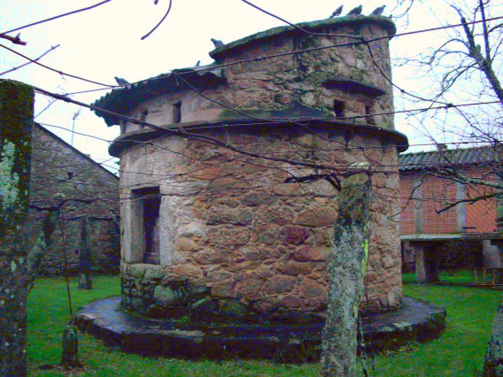

Teaio é unha das aldeas do monte de San Xoán de Laíño. Abaixo dela, xúntanse o río da Devesa co río do Pedregal e os dous van dar ó río Té que desemboca na praia da Torre, ó pé do Castelo da Lúa, do trobador e almirante da mar Paio Gómez Chariño, primeiro señor de Rianxo e seguramente de Laíño. En xeral as raíces TAM – (Tambre) e TE(N) – (Te) asócianse a hidronímicos. Edelmiro Bascuas estudando a hidronimia paleoeuropea de Galicia entende que poderían entroncarse coa forma TA, ‘derreterse, fluír’, ou coa raíz TINA que daría TENA e TEA, sempre con matices relativos ás augas. Nas nosas aldeas, aínda que agora se perdeu, cultivábase na beira das casas o té bravo (Chenopodium ambrosioides), que se lle daba ós animais e tamén o tomaba a xente. É unha planta orixinaria de México e pénsase que o introduciu en Europa o médico de Felipe II.
Nalgunhas follas do topográfico o río do que falamos chámase Río do Té. Con certeza é un despiste do topógrafo pero recollemos a curiosidade. No libro do notario de Rianxo de 1457 hai veciños desta aldea: Pero de Teayo, fillo de Gonçaluo de Teayo e Fernando de Bustelo de Teayo casado co María do Picadiço. A Colección Diplomática Galicia Histórica conserva varios documentos nos que se fai referencia a Sanctum Martinum de Teaio, un de 1131, dun sobriño de Diego Gelmírez e outro de 1151, e no Libro de fábrica de San Xián de Laíño consta que en Teaio había unha ermida baixo a advocación de San Martiño. Cítaa o cardeal Del Hoyo en 1606. Juan Rodríguez del Padrón no remate do Seu Siervo libre de amor, despois da morte tráxica dos amantes Ardanlyer e Lyessa no castelo da Rocha Blanca de Iria, cóntanos que quedaron ceibos polas ladeiras os seus corceles “en testimonio de lo qual, oy día se fallan cauallos saluajes de aquella raça en los montes de Teayo, de Miranda y de Bujan, donde es la flor de los monteros (…) los cuales affyrman venir de la casta de los treze que quedaron de Ardanlyer”.
